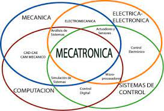
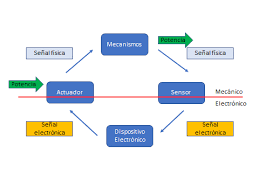
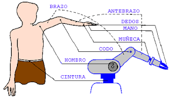

Mecatrónica
Autor:Areli Berenice Diaz Jimenez

¿Características de la mecatronica?
La mecatrónica es una disciplina interdisciplinaria que combina elementos de la ingeniería mecánica, electrónica, informática y control automático. Sus características principales incluyen:

- Interdisciplinaria: La mecatrónica se basa en la integración de múltiples disciplinas, incluyendo la mecánica, la electrónica y la informática. Esto significa que los profesionales de la mecatrónica deben tener conocimientos en una variedad de campos para abordar proyectos de manera efectiva.
- Sistemas Integrados: La mecatrónica se centra en el diseño y la creación de sistemas y productos que incorporan tanto componentes mecánicos como electrónicos. Estos sistemas suelen ser altamente integrados y pueden incluir sensores, actuadores, microcontroladores y más.
- Automatización y Control: La mecatrónica busca desarrollar sistemas capaces de realizar tareas automatizadas o controladas por computadora. Esto implica la utilización de algoritmos y controladores para tomar decisiones y ajustar el funcionamiento de los sistemas en tiempo real.
- Eficiencia y Precisión: La mecatrónica busca mejorar la eficiencia y precisión en una variedad de aplicaciones. Los sistemas mecatrónicos a menudo son más eficientes en términos de consumo de energía y pueden realizar tareas con una mayor precisión que los sistemas puramente mecánicos.
- Versatilidad: La mecatrónica tiene una amplia gama de aplicaciones, desde la automatización industrial y la robótica hasta los vehículos autónomos y la electrónica de consumo. Esto la hace una disciplina versátil que se utiliza en diversas industrias.
- Innovación Tecnológica: La mecatrónica desempeña un papel fundamental en la innovación tecnológica, ya que permite el desarrollo de productos y sistemas avanzados que impulsan el progreso en muchas áreas.
- Enfoque en la Integración:Un aspecto clave de la mecatrónica es la integración efectiva de componentes y tecnologías diversas. Esto implica la capacidad de diseñar y ensamblar sistemas complejos que funcionen de manera cohesiva.
- Resolución de Problemas Complejos:Los profesionales de la mecatrónica deben ser hábiles en la resolución de problemas complejos que involucran aspectos mecánicos, electrónicos y de control.
En resumen, la mecatrónica se destaca por su enfoque en la integración de diferentes disciplinas para diseñar sistemas y productos que sean más eficientes, precisos y versátiles, lo que la convierte en una disciplina esencial en el mundo de la tecnología y la ingeniería.